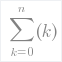

Mirai Math
 Installation,
Installation,
Windows installation instructions
Linux and Mac installation from sources
Linux and Mac binary installation
 Release Notes
Release Notes
What is new in version 0.5?
Known issues of version 0.5
Limitations of version 0.5
 Tutorial
Tutorial
Toolbars
Natural input
Making calculations
Basic statistics
Using arrays
Sums and products
Vectors and matrices
Plots and meshes
Using quadrature
Note on deleting
Where to go next
 Reference
Reference
Natural input
Toolbar input
General
Operators
Symbols
Functions
Copy TeX to Wiki
Create pdf from TeX
Note on file encoding
Internationalization Howto
About i18n
Prerequisities Linux
Prerequisities Windows
Create/update i18n
Submit new/updated i18n